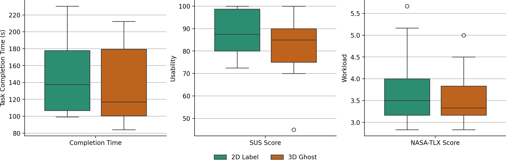
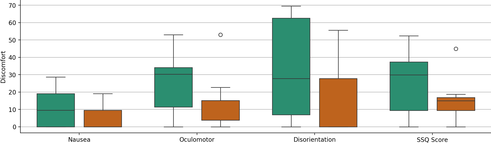

Statistical tests (2D vs 3D, n = 24)
| Measure | Normality Shapiro–Wilk | Test | Result |
|---|---|---|---|
| Completion time | Normal | t-test | t = 0.68, p = .50 |
| Usability (SUS) | Not normal | Mann–Whitney U | U = 88, p = .37 |
| Workload (NASA-TLX) | Normal | t-test | t = 0.53, p = .60 |
| Nausea | Not normal | Mann–Whitney U | U = 96.5, p = .14 |
| Oculomotor strain | Not normal | Mann–Whitney U | U = 95.5, p = .16 |
| Disorientation | Not normal | Mann–Whitney U | U = 87, p = .38 |
PythonpandasData validationHypothesis testingMaster's thesis · KTH & AstraZeneca
Master's Thesis: User Study Data Analysis
End-to-end Python analysis of a controlled 24-participant study comparing two XR training designs, from raw-data integration and validation to statistical testing and reporting.
What I did
- Merged four raw datasets, validated the data, and reshaped it from wide to long format in a reproducible pandas workflow.
- Compared task time, usability (SUS), workload (NASA-TLX) and discomfort (SSQ) between the 2D and 3D conditions.
- Checked assumptions with Shapiro–Wilk (normality) and Levene's test (equal variance), then chose an independent t-test or a Mann–Whitney U test for each measure.
- Found an extreme usability outlier (SUS 2.5/100) and reported results both with and without it, instead of simply removing it.
Findings
- 3D ghost hands showed slight advantages in task completion time (median 117s vs 138s), workload (NASA-TLX 3.33 vs 3.50) and physical comfort (simulator sickness score 15 vs 30, lower is better).
- Perceived usability was slightly higher for 2D labels (SUS 87.5 vs 85.0), and both designs were well above the usability benchmark of 68.
- None of the differences were statistically significant; the results were published in three peer-reviewed papers.